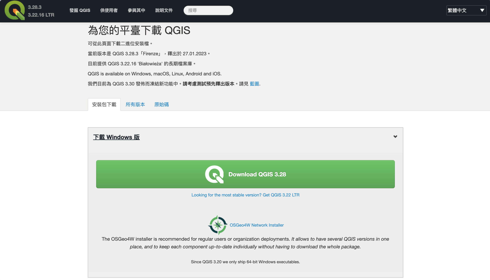

3 介面與使用基礎
3.1 安裝 QGIS
3.1.1 下載 QGIS
請至 QGIS 官方網頁下載。 網站會自動偵測你的作業系統，並提供下載的連結(Figure 3.1)
以 Windows 作業系統為例，當點選「立即下載」後，下載頁面會轉到 windows 專屬的下載頁面(Figure 3.2)。 預設有三個下載的版本，第一個 OSGeo4W Network Installer 是網頁下載的安裝程式， 這個程式檔案比較小，但會透過網路下載相關的必要元件來安裝。如果你有特別的安裝需求， 像是需要安裝或不安裝特定的選項，可以使用這個網路安裝程式。另外下方的 Standalone installers (獨立安裝套件)比較適合新手來使用，可以選擇最新版本， 以 Figure 3.2 為例，即 3.26 版，或是另外一個比較舊的長期維護釋出版 (long-term release) 3.22 版來安裝。

如果沒有特別需求的話，可以直接下載穩定版安裝即可。
3.2 QGIS 圖形介面介紹
QGIS 的預設介面可以分為四個部分：工具列(toolbars，Figure 3.3 中的1)、繪圖區(canvas，即 Figure 3.3 中的2)、 面板(panels，Figure 3.3 1中的3、4和5)與狀態列(圖1中的6)。QGIS 使用 Qt 的圖形介面框架， 因此能夠將工具列和繪圖區任意移動排列，甚至變成浮動的子視窗。要開啟自定介面，包括啟用或關閉工具列、 面板等，只要在工具列上任一位置按滑鼠右鍵就能開啟設定選單(Figure 3.4)。在選單中勾選要啟用或關閉的工具列或面板即可。 另外一個方式就是在選單中的檢視(view)點選工具列(toolbars)或面板(panels)中的選項。
3.2.1 工具列(toolbars)
在 QGIS 中的工具列如 Figure 3.6 所顯示。在最左方(水平排列下)或最上方(垂直排列下)會有個兩排的點， 我們可以稱為移動工作移動工具列的「把手」，你可以用滑鼠左鍵點這個部分拖曳到你想要的地方( 可參考 Figure 3.7)。 另外若每個工具列圖示(icon)右方有個向下的箭頭，代表這個功能圖示有子項目， 點選箭頭後會將子項目選單開啟，此時就能直接選取子項目之功能圖示。 因工具列可能因為載入圖示項目較多而自動隱藏，若有自動隱藏的工具列功能圖示時， 在該工具列的右方會有「》」的圖示，按該圖示後就會把隱藏的功能圖示都顯示出來。

QGIS 發展到現在，功能十分豐富，每次更新都會加入許多新功能，對於新手來說可能會難以切入， 因此我們把工具列整理於 Table 3.1 中，並在後方詳細說明不同工具列所提供的功能和簡單範例。 如果不清楚圖示的功能是什麼，可以將滑鼠停留在圖示上方稍待半秒左右，QGIS 就會自動出現該圖示的功能說明和快速鍵。
| 工具列名稱 | 應用類型 | 功能 | 節 |
|---|---|---|---|
| 專案(projects) | 整合 | 使用專案檔、地圖輸出管理、樣式管理 | 3.2.1.1 |
| 地圖導覽(map navigation) | 整合 | 繪圖區地圖縮放等導覽功能 | 3.2.1.2 |
| 選擇(selection) | 向量 | 選擇向量圖徵(feature)工具列 | 3.2.1.3 |
| 資料來源管理(data source manager) | 整合 | 載入不同的 GIS 檔案 | 3.2.1.4 |
| 管理圖層(manage map layer) | 整合 | 管理地圖的圖層功能 | 3.2.1.5 |
| 數位化(digitizing) | 向量 | 數位化向量圖層功能 | 3.2.1.6 |
| 進階數位化(advanced digitizing) | 向量 | 進階數位化向量圖層功能 | 3.2.1.7 |
| 幾何形狀數位化(shape digitizing) | 向量 | 幾何形狀(圓形、矩形等)之數位化 | 3.2.1.8 |
| 資料庫(database) | 向量 | 資料庫載入與管理功能 | 3.2.1.9 |
| 屬性資料表(attributes) | 向量 | 向量模型之屬性資料功能 | 3.2.1.10 |
| 標籤(label) | 向量 | 顯示與管理向量標籤 | 3.2.1.11 |
| 註記圖層(annotation) | 整合 | 顯示圖層相關註記 | 3.2.1.12 |
| 接合(snapping) | 向量 | 接合的選項工具設定 | 3.2.1.13 |
| 說明(help) | 整合 | 顯示說明文件(開啟瀏覽器閱覽) | ?sec-help_toolbar |
3.2.1.1 專案工具列(projects)
專案工具列如圖 Figure 3.8 所顯示，具有六個主要功能， 和建立與管理專案有關。詳細的說明請參見 Chapter 4 章節。 以下將簡要介紹專案工具列的元件說明，請同時參考 Figure 3.8 的編號來閱讀。
- P1: 建立新專案(快速鍵 Ctrl + N 或 Command + N [mac])，建立新的 QGIS 專案
- P2: 開啟專案(快速鍵 Ctrl + O 或 Command + O [mac])，開啟 QGIS 專案檔
- P3: 儲存專案(快速鍵 Ctrl + S 或 Command + S [mac])，儲存 QGIS 專案檔
- P4: 新建列印版面配置，建立列印出圖的版面配置
- P5: 顯示版面配置管理，顯示版面配置的管理視窗
- P6: 管理樣式，主要是管理顯示向量圖徵之樣式，包含顏色、符號等
3.2.1.3 選擇工具列(selection)
3.2.1.4 資料來源管理工具列(data source manager)
3.2.1.5 圖層管理工具列(manage map layer)
3.2.1.6 數位化工具列(digitizing)
3.2.1.7 進階數位化工具列(advanced digitizing)
3.2.1.8 幾何形狀數位化工具列(shape digitizing)
這個工具列能夠直接繪製圓形、矩形、多邊形等。
3.2.1.9 資料庫(database)
3.2.1.10 屬性資料表(attribute table)工具列